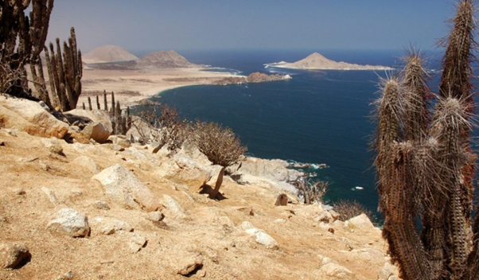
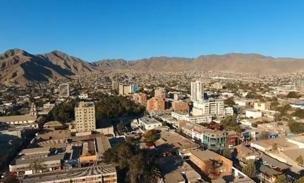

Copiapó é uma cidade localizada no norte do Chile, na região de Atacama. É a capital da província de Copiapó e uma das cidades mais importantes da região, conhecida por sua rica história, cultura e atividades econômicas. Copiapó foi fundada em 1744 durante a colonização espanhola no Chile. Em copiapó se localiza o Parque Nacional Pan de Azúcar, um parque nacional repleto de belezas do bioma semiárido, no qual é possível visitar.

